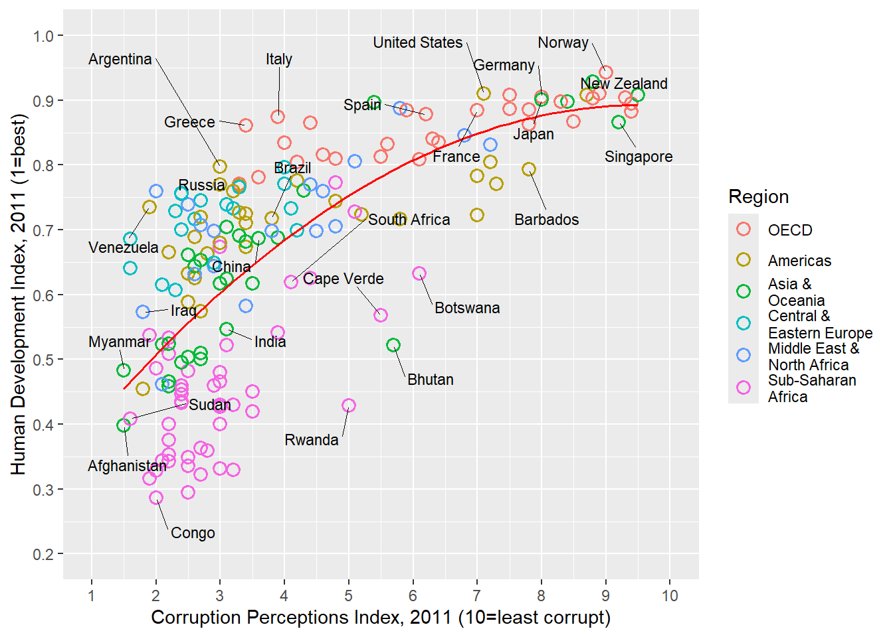

The aim of this challenge is to recreate the plot below originally published in The Economist. The graph is a scatterplot showing the relationship between Corruption Index and Human Development Index for various countries.
X Country HDI.Rank HDI CPI Region
1 1 Afghanistan 172 0.398 1.5 Asia Pacific
2 2 Albania 70 0.739 3.1 East EU Cemt Asia
3 3 Algeria 96 0.698 2.9 MENA
4 4 Angola 148 0.486 2.0 SSA
5 5 Argentina 45 0.797 3.0 Americas
6 6 Armenia 86 0.716 2.6 East EU Cemt Asia
Code
str(ec)
'data.frame': 173 obs. of 6 variables:
$ X : int 1 2 3 4 5 6 7 8 9 10 ...
$ Country : chr "Afghanistan" "Albania" "Algeria" "Angola" ...
$ HDI.Rank: int 172 70 96 148 45 86 2 19 91 53 ...
$ HDI : num 0.398 0.739 0.698 0.486 0.797 0.716 0.929 0.885 0.7 0.771 ...
$ CPI : num 1.5 3.1 2.9 2 3 2.6 8.8 7.8 2.4 7.3 ...
$ Region : chr "Asia Pacific" "East EU Cemt Asia" "MENA" "SSA" ...
Code
levels(ec$Region)
NULL
Code
ec$Region <-factor(ec$Region,levels =c("EU W. Europe","Americas","Asia Pacific","East EU Cemt Asia","MENA","SSA"),labels =c("OECD","Americas","Asia &\nOceania","Central &\nEastern Europe","Middle East &\nNorth Africa","Sub-Saharan\nAfrica"))ec$Region
[1] Asia &\nOceania Central &\nEastern Europe
[3] Middle East &\nNorth Africa Sub-Saharan\nAfrica
[5] Americas Central &\nEastern Europe
[7] Asia &\nOceania OECD
[9] Central &\nEastern Europe Americas
[11] Middle East &\nNorth Africa Asia &\nOceania
[13] Americas Central &\nEastern Europe
[15] OECD Sub-Saharan\nAfrica
[17] Asia &\nOceania Americas
[19] Central &\nEastern Europe Sub-Saharan\nAfrica
[21] Americas OECD
[23] OECD Sub-Saharan\nAfrica
[25] Sub-Saharan\nAfrica Asia &\nOceania
[27] Sub-Saharan\nAfrica Americas
[29] Sub-Saharan\nAfrica Sub-Saharan\nAfrica
[31] Sub-Saharan\nAfrica Americas
[33] Asia &\nOceania Americas
[35] Sub-Saharan\nAfrica Sub-Saharan\nAfrica
[37] Sub-Saharan\nAfrica Americas
[39] Sub-Saharan\nAfrica Central &\nEastern Europe
[41] Americas OECD
[43] OECD OECD
[45] Sub-Saharan\nAfrica Americas
[47] Americas Americas
[49] Middle East &\nNorth Africa Americas
[51] Sub-Saharan\nAfrica Sub-Saharan\nAfrica
[53] OECD Sub-Saharan\nAfrica
[55] OECD OECD
[57] Sub-Saharan\nAfrica Sub-Saharan\nAfrica
[59] Central &\nEastern Europe OECD
[61] Sub-Saharan\nAfrica OECD
[63] Americas Sub-Saharan\nAfrica
[65] Sub-Saharan\nAfrica Americas
[67] Americas Americas
[69] Asia &\nOceania OECD
[71] OECD Asia &\nOceania
[73] Asia &\nOceania Middle East &\nNorth Africa
[75] Middle East &\nNorth Africa OECD
[77] Middle East &\nNorth Africa OECD
[79] Americas Asia &\nOceania
[81] Middle East &\nNorth Africa Central &\nEastern Europe
[83] Sub-Saharan\nAfrica Asia &\nOceania
[85] Asia &\nOceania Middle East &\nNorth Africa
[87] Central &\nEastern Europe Asia &\nOceania
[89] OECD Middle East &\nNorth Africa
[91] Sub-Saharan\nAfrica Sub-Saharan\nAfrica
[93] Middle East &\nNorth Africa OECD
[95] OECD Sub-Saharan\nAfrica
[97] Sub-Saharan\nAfrica Asia &\nOceania
[99] Asia &\nOceania Sub-Saharan\nAfrica
[101] OECD Sub-Saharan\nAfrica
[103] Sub-Saharan\nAfrica Americas
[105] Central &\nEastern Europe Asia &\nOceania
[107] Central &\nEastern Europe Middle East &\nNorth Africa
[109] Sub-Saharan\nAfrica Asia &\nOceania
[111] Sub-Saharan\nAfrica Asia &\nOceania
[113] OECD Asia &\nOceania
[115] Americas Sub-Saharan\nAfrica
[117] Sub-Saharan\nAfrica OECD
[119] Middle East &\nNorth Africa Asia &\nOceania
[121] Americas Asia &\nOceania
[123] Americas Americas
[125] Asia &\nOceania OECD
[127] OECD Middle East &\nNorth Africa
[129] OECD Central &\nEastern Europe
[131] Sub-Saharan\nAfrica Americas
[133] Americas Asia &\nOceania
[135] Middle East &\nNorth Africa Sub-Saharan\nAfrica
[137] Central &\nEastern Europe Sub-Saharan\nAfrica
[139] Sub-Saharan\nAfrica Asia &\nOceania
[141] OECD OECD
[143] Asia &\nOceania Sub-Saharan\nAfrica
[145] OECD Asia &\nOceania
[147] Sub-Saharan\nAfrica Americas
[149] Sub-Saharan\nAfrica OECD
[151] OECD Middle East &\nNorth Africa
[153] Central &\nEastern Europe Sub-Saharan\nAfrica
[155] Asia &\nOceania Asia &\nOceania
[157] Sub-Saharan\nAfrica Asia &\nOceania
[159] Americas Middle East &\nNorth Africa
[161] Central &\nEastern Europe Central &\nEastern Europe
[163] Sub-Saharan\nAfrica Central &\nEastern Europe
[165] Middle East &\nNorth Africa Americas
[167] Americas Central &\nEastern Europe
[169] Asia &\nOceania Americas
[171] Middle East &\nNorth Africa Sub-Saharan\nAfrica
[173] Sub-Saharan\nAfrica
6 Levels: OECD Americas Asia &\nOceania ... Sub-Saharan\nAfrica
Code
head(ec)
X Country HDI.Rank HDI CPI Region
1 1 Afghanistan 172 0.398 1.5 Asia &\nOceania
2 2 Albania 70 0.739 3.1 Central &\nEastern Europe
3 3 Algeria 96 0.698 2.9 Middle East &\nNorth Africa
4 4 Angola 148 0.486 2.0 Sub-Saharan\nAfrica
5 5 Argentina 45 0.797 3.0 Americas
6 6 Armenia 86 0.716 2.6 Central &\nEastern Europe
#install.packages("ggrepel") #packages that help to change font library(ggrepel)p <- p+geom_text_repel(data=subset(ec,Country %in% labels),aes(label=Country),color="black",box.padding=unit(1,'lines'),segment.size=0.25,size=3,family="Gidole")p
Change the scale of x and y axis
Code
p <- p+scale_x_continuous(name="Corruption Perceptions Index, 2011 (10=least corrupt)",breaks=1:10,limits=c(1,10))+scale_y_continuous(name="Human Development Index, 2011 (1=best)",breaks=seq(from=0,to=1,by=0.1),limits=c(0.2,1))p

Quarto
Quarto enables you to weave together content and executable code into a finished document. To learn more about Quarto see https://quarto.org.
Running Code
When you click the Render button a document will be generated that includes both content and the output of embedded code. You can embed code like this:
Code
1+1
[1] 2
You can add options to executable code like this
[1] 4
The echo: false option disables the printing of code (only output is displayed).